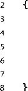
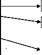

文切换1)保存当前进程的上下文，2)恢复某个先前被抢占的进程被保存的上下文，3)将控 制传递给这个新恢复的进程。
当内核代表用户执行系统调用时，可能会发生上下文切换。如果系统调用因为等待某个事件 发生而阻塞，那么内核可以让当前进程休眠，切换到另一个进程。比如，如果一个read系统调 用请求一个磁盘访问，内核可以选择执行上下文切换，运行另外一个进程，而不是等待数据从磁 盘到达。另一个示例是sleep系统调用，它显式地请求让调用进程休眠。一般而言，即使系统 调用没有阻塞，内核也可以决定执行上下文切换，而不是将控制返回给调用进程。
中断也可能引发上下文切换。比如，所有的系统都有某种产生周期性定时器中断的机制，典 型的为每1毫秒或每10毫秒。每次发生定时器中断时，内核就能判定当前进程已经运行了足够 长的时间了，并切换到一个新的进程。
图8-14展示了一对进程A和B之间上下文切换的示例。在这个例子中，初始地，进程A运 行在用户模式中，直到它通过执行系统调用read陷入到内核。内核中的陷阱处理程序请求来自 磁盘控制器的DMA传输，并且安排在磁盘控制器完成从磁盘到存储器的数据传输后，磁盘中断 处理器。
时间
进程A
进程B
read
磁盘中断 从read返回
|
用户模式 |
|
|
内核模式 |
|
|
▼ 用户模式 |
|
|
内雛式 |
上下文切换 上下文切换
图8-14进程上下文切换的剖析
用户模式
磁盘取数据要用一段相对较长的时间（数量级为几十毫秒)，所以内核执行从进程A到进程 B的上下文切换，而不是在这个间歇时间内等待，什么都不做。注意在切换之前，内核正代表进 程A在用户模式下执行指令。在切换的第一部分中，内核代表进程A在内核模式下执行指令。 然后在某一时刻，它开始代表进程B (仍然是内核模式下）执行指令。在切换之后，内核代表进 程B在用户模式下执行指令。
随后，进程B在用户模式下运行一会儿，直到磁盘发出一个中断信号 ， 表示数据已经从磁 盘传送到了存储器。内核判定进程B已经运行了足够长的时间了，就执行一个从进程B到进程 A的上下文切换，将控制返回给进程A中紧随在系统调用read之后的那条指令。进程A继续 运行，直到下一次异常发生，依此类推。
高速缓存污染 (pollution )和异常控制流
一般而言，硬件高速缓存存储器不能和诸如中断和上下文切换这样的异常控制流很好地交 互。如果当前进程被一个中断暂时中断，那么对于中断处理程序来说高速缓存是冷的（ cold) (译者注： “ 高速缓存是冷的 ” 意思是程序所需要的数据都不在高速缓存中）。如果处理程序从 主存中访问了足够多的表项 ， 那么当被中断的进程继续时 ， 高速缓存对它来说也是冷的了。在 这种情况下，我们就说中断处理程序污染（ pollute) 了高速缓存。使用上下文切换也会发生类 似的现象。当一个进程在上下文切换后继续执行时，高速缓存对于应用程序而言也是冷的，必 须再次热身。
8.3 系统调用错误处理
当Unix系统级函数遇到错误时，它们典型地会返回-1,并设置全局整数变量errno来表 示什么出错了。程序员应该总是检査错误，但是不幸的是 ， 许多人都忽略了错误检查，因为它使 代码变得臃肿，而且难以读懂。比如，下面是我们调用Unix fork函数时会如何检査错误：
if ((pid = forkO) < 0) {
fprintf(stderr, "fork error: %s\n", strerror(errno));
exit(0);
>
strerror函数返回一个文本串 ， 描述了和某个errno值相关联的错误。通过定义下面的 错误报告函数（error-reporting function),我们能够在某种程度上简化这个代码：
void unix 一 error(char *msg) / 氺 Unix-style error */
i *
f printf (stderr, "%s: °/ 0 s\n", msg, strerror (errno));
exit(0);
给定这个函数，我们对fork的调用从4行简化到了 2行：
if ((pid = forkO) < 0)
unix_error("fork error");
通过使用 错误处理包装 （error-handling wrapper)函数，我们可以更进一步地简化我们的代 码。对于一个给定的基本函数foo,我们定义一个具有相同参数的包装函数Foo,但是第一个 字母大写了。包装函数调用基本函数，检查错误，如果有任何问题就终止。比如，下面是fork 函数的错误处理包装函数：

1 pid_t Fork(void) pid 一 t pid;
if ((pid = forkO) < 0)
unix_error("Fork error"); return pid;
给定这个包装函数，我们对fork的调用就缩减为1行：
pid = ForkO ;
我们将在本书剩余的部分中都使用错误处理包装函数。它们能够保持代码示例简洁，而又不 会给你错误的假象，认为允许忽略错误检查。注意，当在本书中谈到系统级函数时，我们总是用 它们的小写字母的基本名字来引用它们，而不是用它们大写的包装函数名来引用。
关于Unix错误处理以及本书中使用的错误处理包装函数的讨论，请参见附录A。包装函数 定义在一个叫做csapp.c的文件中，它们的原型定义在一个叫做csapp.h的头文件中；可以 从CS:APP网站上在线地得到这些代码。
8.4 进程控制
Unix提供了大量从C程序中操作进程的系统调用。这一节将描述这些重要的函数，并举例 说明如何使用它们。 、
8.4.1获取进程ID
每个进程都有一个唯一的正数（非零）进程ID (PID)o getpid 函数返回调用进程的PID。 getppid 函数返回它的父进程的PID (创建调用进程的进程）。
#include <sys/types.h> |
|
#include <unistd.h> |
|
pid^t getpid(void); |
|
pid_t getppid(void); |
返回：调用者或其父进程的 PID 。 |
getpid 和 getppid 函数返回一个类型为 pid 一 t 的整数值，在Linux系统上它在 types . h 中被定义为 into 8.4.2创建和终止进程
从程序员的角度，我们可以认为进程总是处于下面三种状态之一：
•运行。进程要么在 CPU 上执行，要么在等待被执行且最终会被内核调度。
•停止。进程的执行被挂起（suspend),且不会被调度。当收到SIGSTOP、SIGTSTP、 SIDTTIN或者SIGTTOU信号时，进程就停止，并且保持停止直到它收到一个SIGCONT 信号，在这个时刻，进程再次开始运行。（信号是一种软件中断的形式，将在8.5节中详细 描述。）
• 终止。进程永远地停止了。进程会因为三种原因终止：1)收到一个信号，该信号的默认 行为是终止进程， 2) 从主程序返回， 3) 调用 exit 函数。
^ —_ ■ #include <stdlib.h> |
|
void exit(int status); |
该函数无返回值。 |
exit 函数以 status 退出状态来终止进程（另一种设置退出状态的方法是从主程序中返回 一个整数值)。
父进程通过调用fork函数创建一个新的运行子进程：
#include <sys/types.h> |
|
#include <unistd.h> |
|
pid_t fork(void); |
|
返回：子进程返回 0, 父进程返回子进程的 PID, 如果出错，则为 -1 。 |
新创建的子进程几乎但不完全与父进程相同。子进程得到与父进程用户级虚拟地址空间相同 的（但是独立的）一份拷贝，包括文本、数据和bss段、堆以及用户栈。子进程还获得与父进程 任何打开文件描述符相同的拷贝，这就意味着当父进程调用fork时，子进程可以读写父进程中 打开的任何文件。父进程和新创建的子进程之间最大的区别在于它们有不同的PID。
fork函数是有趣的（也是常常令人迷惑的），因为它只被调用 一次， 却会返 回两次： 一次 是在调用进程（父进程）中，一次是在新创建的子进程中。在父进程中,fork返回子进程的 PID。在子进程中，fork返回0。因为子进程的PID总是非零的，返回值就提供一个明确的方 法来分辨程序是在父进程还是在子进程中执行。 ••
图8-15展示了一个使用fork创建子进程的父进程的示例。当fork调用在第8行返回时， 在父进程和子进程中x的值都为1。子进程在第10行增加并输出它的x的拷贝。相似地 ， 父进 程在第15行减少和输出它的x的拷贝。
code/ecf/fork.c
#include "csapp.h"
2
int mainO
{
pid_t pid;
. int x = 1;
7
B pid = ForkO ;.
if (pid := 0) { /* Child */
printf("child : x=%d\n", ++x);
exit(0);
>
•13
/* Parent */
printf("parent: x=%d\n", --x);
exit(0) ;
}
code/ecf/fork.c
图8-15使用fork创建一个新进程 当在Unix系统上运行这个程序时，我们得到下面的结果：
unix> ./fork parent: x=0 child : x=2
这个简单的例子有一些微妙的方面。
• 调用一次，返回两次。 fork函数被父进程调用一次，但是却返回两次 次是返回到
父进程 ， 一次是返回到新创建的子进程。对于只创建一个子进程的程序来说 ， 这还是相当 简单直接的。但是具有多个fork实例的程序可能就会令人迷惑，需要仔细地推敲了。 •并发 执行。父进程和子进程是并发运行的独立进程。内核能够以任意方式交替执行它们的 逻辑控制流中的指令。当我们在系统上运行这个程序时，父进程先完成它的printf语 句，然后是子进程。然而，在另一个系统上可能正好相反。一般而言，作为程序员，我们 决不能对不同进程中指令的交替执行做任何假设。
相同的但是独立的地址 空间。如果能够在fork函数在父进程和子进程中返回后立即暂停 这两个进程，我们会看到每个进程的地址空间都是相同的。每个进程有相同的用户栈、相 同的本地变 量值、 相同的堆、相同的全局变量值，以及相同的代码。因此，在我们的示例 程序中，当fork函数在第8行返回时，本地变量x在父进程和子进程中都为1。然而， 因为父进程和子进程是独立的进程，它们都有自己的私有地址空间。父进程和子进程对x 所做的任何改变都是独立的 ， 不会反映在另一个进程的存储器中。这就是为什么当父进程 和子进程调用它们各自的printf语句时，它们中的变量x会有不同的值的原因。 •共享 文件。当运行这个示例程序时，我们注意到父进程和子进程都把它们的输出显示在屏 幕上。原因是子进程继承了父进程所有的打开文件。当父进程调用fork时，stdout文 件是被打开的，并指向屏幕。子进程继承了这个文件，因此它的输出也是指向屏幕的。
如果你是第一次学习fori/函数，画进程图通常会有所帮助，其中每个水平的箭头对应于从 左到右执行指令的进程，而每个垂直的箭头对应于fork函数的执行。
例如，图8-16a中的程序将产生多少输出行昵？图8-16b给出了相应的进程图。当父进程执 行程序中第一个（也是唯一一个）fork函数时，它会创建一个子进程。每个进程都调用一次 printf,所以程序打印两个输出行。
现在如果我们像图8-16C所示的那样调用fork两次，会怎样呢？就像在图8-16d中看到的 那样，父进程调用fork创建一个子进程，然后父进程和子进程都调用fork,这就导致多了两 个进程。因此，就有了 4个进程，每个都调用printf,所以程序就产生了 4个输出疔。
继续沿这个思路想下去，如果我们要调用fork三次，如图8-16e所示，又会发生什么呢？ 就像我们从图8-16f中的进程图中看到的那样，一共会有8个进程。每个进程调用printf,所 以程序就产生了8个输出行。
#include "csapp.h"
2
int mainO
{
hello
hello
ForkO ;
printf("hello\n");
exit(0);
fork
a)调用fork—次
b)打印两个输出行
#include "csapp.h" int mainO
hello
hello
hello
hello
ForkO;
ForkO;
printf("hello\n");
exit(0);
c)调用fork两次
1 2 |
#include "csapp.h" |
3 |
int mainO |
4 |
{ |
5 |
ForkO; |
6 |
ForkO; |
7 |
ForkO ； |
8 |
printf("hello\n"); |
9 |
exit(0); |
10 |
} |
e)调用fork三次
fork fork
d)打印4个输出行
fork fork fork
f)打印8个输出行
图8-16 fork程序示例和它们的进程图
_练习题8.2考虑下面的程序：
code/ecf/forkprobO. c
#include "csapp.h"
2
int mainO
{ >
int x = 1;
6
if (ForkO == 0)
printf("printf1: x=%d\n", ++x);
printf("printf2: x=%d\n", —x);
exit(0);
ri >
code/ecf/forkprobO. c
子进程的输出是什么？
父进程的输出是什么？
8.4.3 回收子进程
当一个进程由于某种原因终止时，内核并不是立即把它从系统中清除。相反，进程被保持在 一种已终止的状态中 ， 直到被它的父进程回收（reap)。当父进程回收已终止的子进程时，内核 将子进程的退出状态传递给父进程 ， 然后抛弃已终止的进程，从此时开始，该进程就不存在了。 一个终止了但还未被回收的进程称为僵死进程（zombie)。
为什么已终止的子进程被称为僵死进程？
在民间传说中 ， 僵尸是活着的尸体， 一 种半生半死的实体。僵死进程已经终止了 ， 而内核仍 保留着它的某些状态直到父进程回收它为止 , 从这个意义上说它们是类似的。
如果父进程没有回收它的僵死子进程就终止了，那么内核就会安排init进程来回收它们。 init进程的PID为1,并且是在系统初始化时由内核创建的。长时间运行的程序，比如外壳或 者服务器，总是应该回收它们的僵死子进程。即使僵死子进程没有运行，它们仍然消耗系统的存 储器资源。
一个进程可以通过调用waitpid函数来等待它的子进程终止或者停止。
#include <sys/types.h>
#include <sys/wait.h>
pid_t waitpid(pid_t pid, int *status, int options);
返回：如果成功，则为子进程的 PID, 如果 WNOHANG, 则为 0, 如果其他错误，则为 -1 。
waitpid函数有点复杂。默认地（当options = 0时)，waitpid挂起调用进程的执行, 直到它的等待集合中的一个子进程终止。如果等待集合中的一个进程在刚调用的时刻就已经终止 了，那么waitpid就立即返回。在这两种情况下，waitpid返回导致waitpid返回的已终止 子进程的PID,并且将这个已终止的子进程从系统中去除。
判定等待集合的成员
等待集合的成员是由参数pid来确定的：
•如果pid > 0,那么等待集合就是一个单独的子进程,它的进程ID等于pid。
•如果pid = -1，那么等待集合就是由父进程所有的子进程组成的。
waitpid函数还支持其他类型的等待集合，包括Unix进程组，对此我们将不做讨论。
修改默认行为
可以通过将optioins设置为常量WNOHANG和WUNTRACED的各种组合,修改默认行为： •WNOHANG:如果等待集合中的任何子进程都还没有终止，那么就立即返回（返回值为
0)。默认的行为是挂起调用进程，直到有子进程终止。在等待子进程终止的同时，如果还 想做些有用的工作，这个选项会有用。
•WUNTRACED:挂起调用进程的执行，直到等待集合中的一个进程变成已终止或者被停 止。返回的PID为导致返回的已终止或被停止子进程的PID。默认的行为是只返回已终止 的子进程。当你想要检查已终止和被停止的子进程时 , 这个选项会有用。
WNOHANG|WUNTRACED ：立即返回，如果等待集合中没有任何子进程被停止或已终止， 那么返回值为0,或者返回值等于那个被停止或者已终止的子进程的PID。
检查已回收子进程的退出状态
如果status参数是非空的，那么waitpid就会在status参数中放上关于导致返回的子 进程的状态信息。wait .h头文件定义了解释status参数的几个宏：
•WIFEXITED (status)：如果子进程通过调用exit或者一个返回（return)正常终止， 就返回真。
•WEXITSTATUS (status)：返回一个正常终止的子进程的退出状态。只有在WIFEXITED 返回为真时，才会定义这个状态。
•WIFSIGNALED (status)：如果子进程是因为一个未被捕获的信号终止的，那么就返回 真（将在8.5节中解释说明信号)。
•WTERMSIG (status) ： 返回导致子进程终止的信号的数量。只有在WIFSIGNALED (status)返回为真时，才定义这个状态。
•WIFSTOPPED (status)：如果弓丨起返回的子进程当前是被停止的，那么就返回真。 •WSTOPSIG (status)：返回引起子进程停止的信号的数量。只有在WIFSTOPPED (status)返回为真时,才定义这个状态。
错误条件
如果调用进程没有子进程，那么waitpid返回-1，并且设置errno为ECHILD。如果 waitpid函数被一个信号中断 ， 那么它返回—1,并设置errno为EINTR。
和 Unix 函数相关的常量
像WNOHANG和WUNTRACED这样的常量是由系统头文件定义的。例如，WNOHANG 和WUNTRACED是由wait, h头文件（间接）定义的 ：
/* Bits in the third argument to *waitpid 1 . */
#define WNOHANG 1 /* Don't block waiting. */
#define WUNTRACED 2 /* Report status of stopped children. */
为了使用这些 常量， 必须在你的代码中包含 wait .h 头文件 ：
#include <sys/wait.h>
每个Unix函数的man页列出了无论何时你在代码中使用那个函数都要包含的头文件。同 时，为了检查诸如ECHILD和EINTR之类的返回代码，你必须包含errno.h。为了简化代码 示例，我们包含了一个称为csapp.h的头文件，它包括了本书中使用的所有函数的头文件。 csapp.h头文件可以从CS:APP网站在线获得。
® 练习题 8.3 列出下 f 程序所有可能的输出序列：
|
1 *■> |
int mainO i |
|
|
3 |
\ if (ForkO == 0) { |
|
|
4 |
printf("a"); |
|
|
5 |
} |
|
|
6 |
else { |
|
|
7 |
printf ("b"); |
|
|
8 |
waitpid(-l, NUL |
L, 0); |
|
9 |
} |
|
|
10 |
printf ("c"); |
|
|
11 |
exit(O) ; |
|
|
12 |
> |
5. wait函数
wait函数是waitpid函数的简单版本：
code/ecf/waitprobO. c
code/ecf/waitprobO. c
#include <sys/types.h> #include <sys/wait.h>
pid_t wait(int *status);
返回：如果成功，则为子进程的 PID, 如果出错，则为一 1 。
调用 wait (&status)等价于调用 waitpid(-1, &status, 0) 0
6.使用waitpid的示例
因为waitpid函数有些复杂，看几个例子会有所帮助。图8-17展示了一个程序，它使用 waitpid,不按照特定的顺序等待它的所有#个子进程终止。
在第11行，父进程创建#个子进程，在第12行，每个子进程以一个唯一的退出状态退出。 在我们继续研究之前，请确认你已经理解为什么每个子进程会执行第12行，而父进程不会。
在第15行，父进程用waitpid作为while循环的测试条件，等待它所有的子进程终止。 因为第一个参数是-1,所以对waitpid的调用会阻塞，直到任意一个子进程终止。在每个子 进程终止时，对waitpid的调用会返回，返回值为该子进程的非零的PID。第16行检査子进 程的退出状态。如果子进程是正常终止的，在此是以调用exit函数终止的，那么父进程就提取 出退出状态，把它输出到stdout上。
当回收了所有的子进程之后，再调用waitpid就返回-1,并且设置errno为ECHILD。 第24行检查waitpid函数是正常终止的，否则就输出一个错误消息。在我们的Unix系统上运 行这个程序时，它产生如下输出：
unix> ./waitpidl
child 22966 terminated normally with exit status=100
child 22967 terminated normally with exit status=101
注意，程序不会按照特定的顺序回收子进程。子进程回收的顺序是这台特定的计算机的属 性。在另一个系统上，甚至在同一个系统上再执行一次，两个子进程都可能以相反的顺序被回 收。这 是非确定性的 （nondeterministic)行为的一个示例，这种非确定性行为使得对并发进行推 理非常困难。两种可能的结果都是正确的 ， 作为一个程序员，你绝不可以假设总是会出现某一个 结果，无论另一个结果多么不可能出现。唯一正确的假设是每一个可能的结果都同样可能出现。
图8-18展示了一个简单的改变，它消除了这种不确定性的，按照父进程创建子进程的相同 顺序来回收这些子进程。在第11行中，父进程按照顺序存储了它的子进程的PID,然后通过用 适当的PID作为第一个参数来调用waitpid,按照同样的顺序来等待每个子进程。.
. code/ecf/waitpidl.c
#include "csapp.h" #define N 2
int mainO
6
7
9
10
11
12
13
14
15
16
17
18
19
21 22 23 2.4
25
26
27
28
int status, i; pid_t pid;
/ 5 Parent creates M children for (i = 0; i < N; i++)
/* Child */
if ((pid = ForkO) == 0) exit(100+i);
/* Parent reaps N children in no particular order while ((pid =* waitpid(-1, &status, 0)) >0) { if (WIFEXITED(status))
printf("child %d terminated normally with, pid, WEXITSTATUS(status));
else
printf("child %d terminated abnormally\n",
>
The only normal termination is if there are no more children */ (errno != ECHILD)
/*
if
exit(0);
*/
exit status=%d\n", pid);
code/ecf/waitpidl. c
图8-17使用waitpid函数不按照特定的顺序回收僵死子进程
code/ecf/waitpid2.c
1
2
3
4
5
6
7
9
10 .11 12
13
14
15
16
17
18
19
21 22
23
24
25
26
27
29
#include "csapp.h"
#define N 2
int mainO {
int status, i; pid^t pid[N], retpid;
/* Parent creates N children */ for (i = 0; i < N; i++)
if ((pid[i] = ForkO) == 0) /* Child .
exit(100+i);
/* Parent reaps N children in order */
= 0;
while ((retpid = waitpid(pid[i++], &status, 0)) >0) { if (WIFEXITED(status))
printf("child %d terminated normally with exit status=%d\n", retpid, WEXITSTATUS(status));
else
printf ('• child %d terminated abnormallyW 1 , retpid);
>
/* The only normal termination is if there are no more children */ if (errno != ECHILD)
unix_error("waitpid error");
exit(0);
_练习题8.4考虑下面的程序：
—一" ! ——：^~' code/ecf/waitprobl. c
int mainO
{
int status;
pid_t pid;
5
printf("Hello\n");
pid = ForkO;
printf("%d\n", !pid);
if (pid != 0) {
if (waitpid(-1, festatus, 0) > 0) {
if (WIFEXITED(status) != 0)
printf("%d\n", WEXITSTATUS(status));
> ' 7
}
printf("Bye\n");
exit(2);
>
code/ecf/waitprobl. c
这个程序会产生多少输出行？
这些输出行的一种可能的顺序是什么？
8.4.4 让进程休眠
sleep函数将一个进程挂起一段指定的时间。
#include <unistd.h> |
|
unsigned int sleep(unsigned int secs); |
|
返回：还要休眠的秒数。 |
如果请求的时间量已经到了，sleep返回0,否则返回还剩下的要休眠的秒数。后一种情 况是可能的，如果因为sleep函数被一 个信号 中断而过早地返回。我们将在8.5节中详细讨 论信号。
我们会发现很有用的另一个函数是pause函数，该函数让调用函数休眠，直到该进程收到一 个信号o
#include <unistd.h> |
|
int pause(void); |
总是返回一 1 。 |
练习题8.5编写一个sleep的包装函数，叫做snooze,带有下面的接口： unsigned int snooze(unsigned int secs);
除了 snooze函数会打印出一条信息来描述进程实际休眠了多长时间外，它和sleep函数的行 为完全一样：
Slept for 4 of 5 secs.
加载并运行程序
execve 函数在当前进程的上下文中加载并运行一个新程序。
#include <unistd.h>
int execve(const char *filename, const char *argv [], const char *envp []);
如果成功，则不返回，如果错误，则返回一 1 。
execve 函数加载并运行可执行目标文件 filename, 且带参数列表 argv 和环境变量列表 envp 。只有当出现错误时，例如找不到 filename, execve 才会返回到调用程序。所以，与 fork— 次调用返回两次不同， execve 调用」次并从不返回。
参数列表是用图 8-19 中的数据结构表示的。 argv 变量指向一个以 null 结尾的指针数组，其 中每个指针都指向一个参数串。按照惯例， argv[0] 是可执行目标文件的名字。环境变量的列 表是由一个类似的数据结构表示的，如图 8-20 所示。 envp 变量指向一个以 null 结尾的指针数 组，其中每个指针指向一个环境变量串，其中每个串都是形如 “NAME=VALUE” 的名字 - 值对。
argv 口
argv[0]
argv[l]
argv [argc - 1]

"Is"
j "/user/include" |
]
-It"
图8-19参数列表的组织结构
envp[]
envp
|
1 ► |
envp [0] |
^ |
|
」 |
envp[l] |
1 |
|
envp[n ^ 1] |
||
|
..NULL |
►| ,, PWD=/usr/droh ,, | | "PRINTER=iron" |
"USER=droh M
图8-20环境变量列表的组织结构
在execve加载了 filename之后，它调用7.9节中描迷的启动代码。启动代码设置栈，并 将控制传递给新程序的主函数，该主函数有如下形式的原型
int main(int argc, char **argv, char **envp);
或者等价地，
int main(int argc, char *argv[], char *envp[]);
当 main 开始在一个 32 位 Linux 进程中执行时，用户栈有如图 8-21 所示的组织结构。让我 们从栈底（高地址）往栈顶（低地址）依次看 “ 看。首先是参数和环境字符串，它们都是连续地 存放在栈中的，一个接一个，没有分隔。栈往上紧随其后的是以 null 结尾的指针数组，其中每 个指针都指向栈中的一个环境变量串。全局变量 environ 指向这些指针中的第一个 envp [0 ]。 紧随环境变量数组之后的是以 null 结尾的 argv [] 数组，其中每个元素都指向栈中一个参数串。 在栈的顶部是 main 函数的 3 个参数： 1) envp, 它指向 envp[] 数组， 2) argv ,它指向 argv[] 数组， 3) argc, 它给出 argv[] 中非空指针的数量。
Unix 提供了几个函数来操作环境数组：
栈底
Oxbfffffff
以 mill 结尾的环境变量串
以 mill 结尾的命令行参数串
envp [n] = = NULL
envp [n—1]
environ
envp [0]
= NULL
argv [argc] =
argv[argc-l]
argv[0]
envp
argv
argc
Oxbffffa7c
main 的找帧
栈顶
图8-21当一个新的程序开始时，用户栈的典型组织结构
#include <stdlib.h>
char *getenv(const char *name)
返回：若存在则为指向 name 的指针，若无匹配的，则为 NULL 。
getenv函数在环境数组中搜索字符串“name=value”。如果找到了，它就返回一个指向 value的指针，否则它就返回NULL。
#include <stdlib.h>
int setenv(const char *name, const char *newvalue, int overwrite);
返回：若成功则为 0, 若错误则为一 1 。
void unsetenv(const char *name);
返回：无。
如果环境数组包含一个形如“name=oldvalue”的字符串，那么unsetenv会删除它， 而setenv会用newvalue代替oldvalue,但是只有在overwirte非零时才会这样。如果 name不存在，那么setenv就把“name=newvalue”添加到数组中。
程序与进程
这是一个适当的地方，停下来，确认一下你理解了程序和进程之间的区别。程序是一堆代码 和数据；程序可以作为目标模块存在于磁盘上，或者作为段存在于地址空间中。进程是执行中程 序的一个具体的实例；程序总是运行在某个进程的上下文中。如果你想要理解fork和execve 函数，理解这个差异是>(艮重要的。fork函数夺新的予进程中运行相同的程序，新的子进程是父 进程的一个复制品。execve函数在当前进程的上下文中加载并运行一个新的程序。它会覆盖当 前进程的地址空间，但并没有创建一个新进程。新的程序仍然有相同的PID，并且继承了调用 execve函数时已打开的所有文件描述符。
®练习题8.6编写一个叫做myecho的程序，它打印出它的命令行参数和环境变量。例如：
皿ix> ./myecho argl arg2 Command line arguments: argv[ 0]: myecho argv[ 1]: argl argv[ 2] : arg2
Environment variables:
envp[ 0]: PWD=/usrO/droh/ics/code/ecf envp [ 1]: TERM=emacs
envp[25]: USER=droh
envp[26]: SHELL=/usr/local/bin/tcsh
envp[27]: H0ME=/usr0/droh
利用 fork 和 execve 运行程序
像Unix外壳和Web服务器（第11章）这样的程序大量使用了 fork和execve函数。外 壳是一个交互型的应用级程序，它代表用户运行其他程序。最早的外壳是sh程序，后面出现了 一些变种，比如csh、tcsh、ksh和bash。外壳执行一系列的读/求值（read/evaluate)步骤, 然后终止。读步骤读取来自用户的一个命令行。求值步骤解析命令行，并代表用户运行程序。
图8-22展示了一个简单外壳的main例程。外壳打印一个命令行提示符，等#用户在 stdin上输入命令行，然后对这个命令行求值。
code/ecf/shellex. c
|
■1 |
#include "csapp.h" |
|
2 |
#define MAXARGS 128 |
|
3 4 |
/* Function prototypes */ |
|
5 |
void eval(char *cmdline) ; |
|
6 |
int parseline(char *buf, char **axgv) ; |
|
7 |
int bui11in.command(char **argv); |
|
8 9 |
int mainO |
1 char cmdline[MAXLINE]; /氺 Command line */
12 13 |
while (1) { |
\4 |
/* Read */ |
15 |
printf ("> "); |
16 |
Fgets(cmdline, MAXLINE, stdin); |
17 |
if (feof(stdin)) |
18 i o |
exit(0); |
( y 20 |
/* Evaluate */ |
21 |
eval(cmdline); |
22 |
> |
23 ] |
h |
图8-22 —个简单的外壳程序的main例程
;' .
图8-23展示了对命令求值的代码。它的首要任务是调用parseline函数（见图8-24), 这个函数解析了以空格分隔的命令行参数，并构造最终会传递给execve的argv向量。第一个
参数被假设为要么是一个内置的外壳命令名，马上就会解释这个命令，要么是一个可执行目标文 件，会在一个新的子进程的上下文中加载并运行这个文件。
如果最后一个参数是“&”字符，那么parseline返回1,表示应该在后台执行该程序 (外壳不会等待它完成)，否则它返回0,表示应该 在前台 执行这个程序（外壳会等待它完成）。
在解析了命令行之后，eval函数调用builtin—command函数，该函数检查第一个命令 行参数是否是一个内置的外壳命令。如果是，它就立b解释这个命令，并返回1,否则返回0。 简单的外壳只有一个内置命令——quit命令，该命令会终止外壳。实际使用的外壳有大量的命 令，如 pwd、jobs 和 fg。
code/ecf/shellex. c
/* eval 一 Evaluate a command line */
void eval(char *cmdline)
4
5
6
7
9
10
11
12
13
14
15
16
17
18